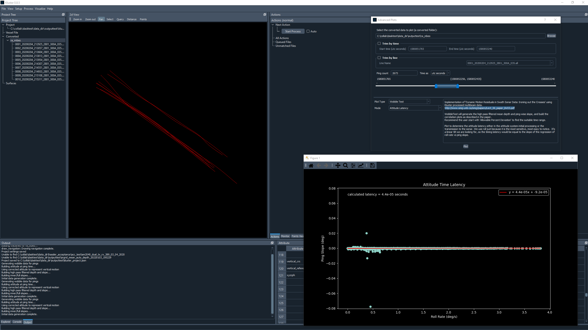

Attitude Latency Assessment¶
The traditional Latency test involves running lines at different speeds and comparing the depths. In general, this is a difficult test to perform and to assess, so we do not include it in this discussion.
There is another test that we have found to be more reliable, which is to calculate the slope of the ping and compare it to the roll rate. The best fit line of this plot essentially represents the latency, and roll is an easy data source to assess in this way, as it is the most sensitive to latency changes.
You can use either a new set of lines, the patch test or the reference surface lines for this plot. You will not need a surface. Ideally the lines you use should represent a flat seafloor, and should be during a period of time where you were experiencing some roll.
This plot is a part of the Wobble Test in Kluster, which is an implementation of the John Hughes Clark paper on “dynamic motion residuals”. You can experiment with the rest of the Wobble Test (see Plot Type = Wobble Test, Mode = Dashboard) but for now we are going to focus on the ‘Attitude Latency’ plot.
To run this process in Kluster, you need to:
Process the latency lines or reload the existing patch test/extinction test lines.
Select the Converted entry for the Latency lines in the Project Tree or if you only want to include specific lines, select those lines in the Project Tree or using the Select tool in 2d View.
Go to Visualize - Advanced Plots - Wobble Test
Select the time range (limiting to less than 3000 pings ideally) and click Plot.
Limit the time range to just a single line using the ‘Trim by line’ or just drag the blue sliders around until you get the right ‘Ping Count’, see the ping count box above the sliders.
{kind=link}
Using the Results¶
As with the patch test results, if you get a large value or a value that disagrees with what you current have, you should first examine the dataset and processing to ensure you did everything correctly. For latency, if you have a large feature or the seafloor is not very flat or if there isn’t much roll, you can get anomalous results.
In our experience with Kongsberg systems, you often times see a latency value from 7 to 14 milliseconds.
After you have a new latency value that is satisfactory, with your converted data selected in the Project Tree, go to Setup - Vessel Offsets, and you’ll see the display showing you the vessel, waterline plane, and the sensor data.
You want to use the following section:
Latency, Sensor = Latency
Update the values you see here with your new values, click the Update button and close the Vessel Setup window. It will ask you if you want to save your changes. Select Yes. It will then ask if you want to use a vessel file or update the multibeam data offsets. If you update the multibeam data, the angles that are in the converted data are updated and used during multibeam processing. If you choose vessel, it will not update the converted multibeam data angles and instead build a vessel file that overrides the multibeam data offsets and angles. You probably want to choose update, unless you are doing something else with vessel files.
Kluster will then generate a new processing action to reflect the fact that you are using different mounting angles and need to restart processing at Orientation. Hit Start Process, and the data will be reprocessed with the new angles!